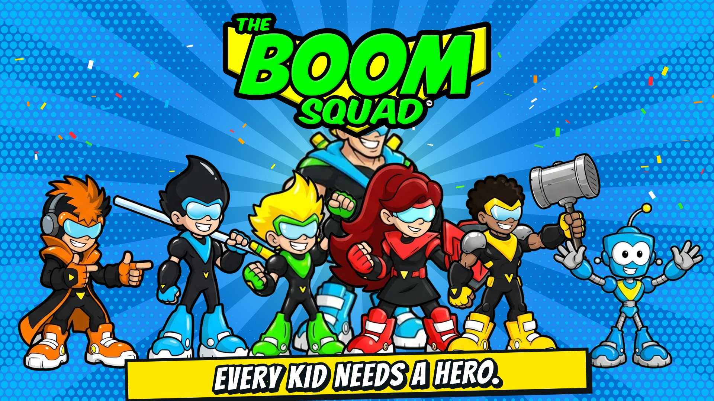

<!--
  The Boom Squad — Hero Reel (website hero)
  Drop this block where the homepage hero goes. Put the 4 media files in the same folder
  as the page (or change the paths below).

  How it behaves:
  - Wide screens play the 16:9 desktop reel; narrow/portrait screens play the 9:16 mobile reel.
  - Visitors who have "Reduce motion" turned on (iPhone/Android/Mac/Windows accessibility
    setting) get the still poster image instead — no video loads or plays for them.
  - Videos are muted, loop, and play inline (required for autoplay on phones).
  - Only the video that matches the screen is downloaded.
-->
<section class="tbs-hero" aria-label="The Boom Squad">
  <picture class="tbs-hero__still">
    <source media="(max-aspect-ratio: 4/5)" srcset="TheBoomSquad-Crew-HeroReel-ReducedMotionMobile-Website-v1_2026-10.jpg">
    
  </picture>
  <video class="tbs-hero__video" muted loop playsinline preload="none" aria-hidden="true"
         data-desktop="TheBoomSquad-Crew-HeroReel-Desktop-Website-v1_2026-10.mp4"
         data-mobile="TheBoomSquad-Crew-HeroReel-Mobile-Website-v1_2026-10.mp4"></video>
</section>

<style>
  .tbs-hero { position: relative; width: 100%; aspect-ratio: 16 / 9; overflow: hidden; background: #0A1630; }
  .tbs-hero__still img, .tbs-hero__video { position: absolute; inset: 0; width: 100%; height: 100%; object-fit: cover; display: block; }
  .tbs-hero__video { opacity: 0; transition: opacity .3s; }
  .tbs-hero.is-playing .tbs-hero__video { opacity: 1; }
  @media (max-aspect-ratio: 4/5) { .tbs-hero { aspect-ratio: 9 / 16; max-height: 100svh; } }
</style>

<script>
  (function () {
    var hero = document.querySelector('.tbs-hero');
    var video = hero && hero.querySelector('.tbs-hero__video');
    if (!video) return;
    var reduce = window.matchMedia('(prefers-reduced-motion: reduce)');
    var portrait = window.matchMedia('(max-aspect-ratio: 4/5)');
    function update() {
      if (reduce.matches) { video.pause(); video.removeAttribute('src'); hero.classList.remove('is-playing'); return; }
      var want = portrait.matches ? video.dataset.mobile : video.dataset.desktop;
      if (video.getAttribute('src') !== want) { video.src = want; }
      var p = video.play();
      if (p && p.then) p.then(function () { hero.classList.add('is-playing'); }).catch(function () {});
    }
    reduce.addEventListener ? reduce.addEventListener('change', update) : reduce.addListener(update);
    portrait.addEventListener ? portrait.addEventListener('change', update) : portrait.addListener(update);
    update();
  })();
</script>
